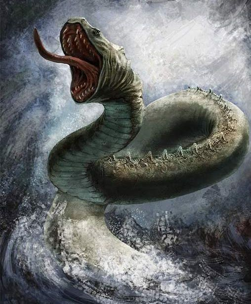
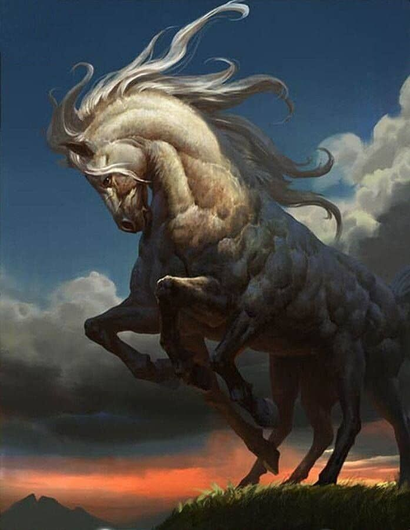
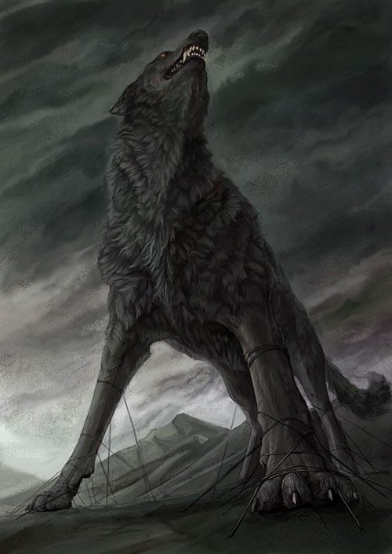

En la mitología nórdica, Jörmungandr, también llamada la "Serpiente de Midgard" , es una gigantesca serpiente que ronda Midgard (o Midgård) hasta el día del Ragnarök. Es un monstruo masculino.
Tiene al dios Loki como padre y a la gigante Angrboda como madre, y cuando los Æsir se enteraron de este ser maligno engendrado por tan terribles padres, y vieron con su don de la adivinación las cosas
terribles que haría, decidieron encargarse del monstruo. Thor lo lanzó al mar que rodea Midgard, donde quedará atrapado hasta el Ragnarök, el día de la destrucción total
Jormundgander creció tanto que mordiéndose la cola podría abrazar toda la Tierra. Se le conoce también por ello en los idiomas escandinavos como "jordens band", esto es, "cinta del mundo".

Sleipnir
En la mitología escandinava, Sleipnir o Sleipner (del nórdico antiguo: «el resbaladizo»)12 es un caballo gris de ocho patas. Sleipnir es mencionado en la Edda poética,
compilada en el siglo XIII a partir de fuentes antiguas, y en la Edda prosaica, escrita por Snorri Sturluson en el siglo XIII. En ambas fuentes se indica que Sleipnir pertenecía a Odín,
y era hijo de Loki y Svaðilfari, se lo describe como el mejor de los caballos, y a veces es montado para llegar hasta el mismo Hel (Reino de la muerte).

Fenrir
es un gigantesco lobo monstruoso. Fenrir aparece en la Edda poética compilada en el siglo XIII desde antiguas fuentes tradicionales y en la Edda prosaica y la Heimskringla,
escritas en el siglo XIII por Snorri Sturluson. Tanto en la Edda prosaica como en la Edda poética,
Fenrir es el padre de los lobos Sköll y Hati. Es hijo de Loki y se predice que matará al dios Odín durante los eventos del Ragnarök para posteriormente ser asesinado por el hijo de Odín, Víðarr.
